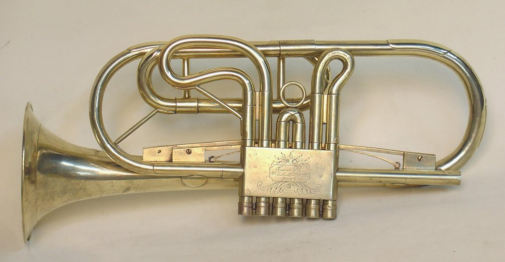
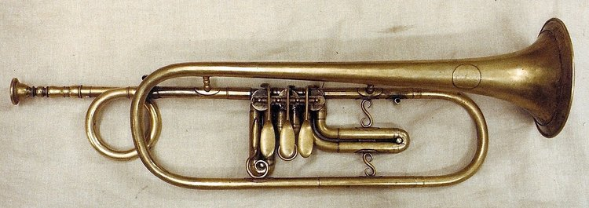
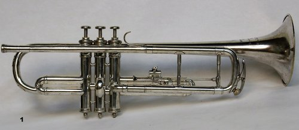
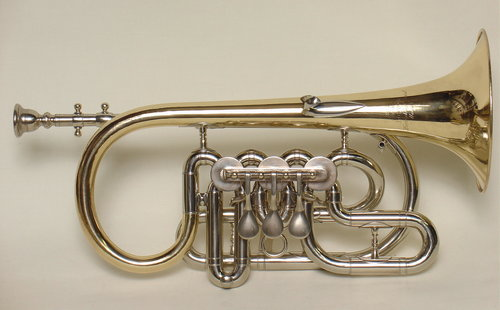
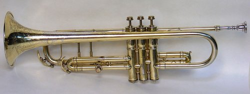
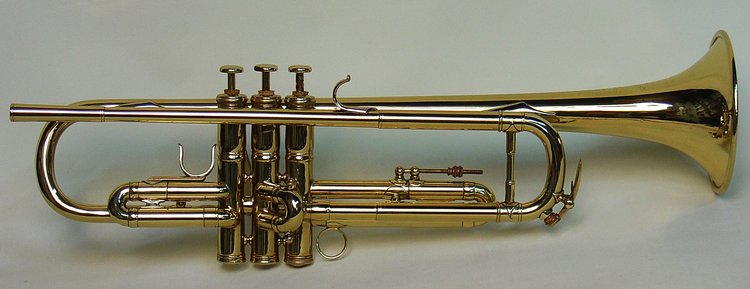

History of Trumpets
Throughout its development, there have been many iterations of the trumpet.
From earliest to latest they are:
- Graves Post Horn (1845)

- Cornet or Trumpet in Bb and G by E.G. Wright (1860)

- Courtois Trumpets (1885)

- Boston Trumpets (1887)

- Conn Trumpets (1899)

- Besson Trumpets aka The Modern Trumpet (1910)
